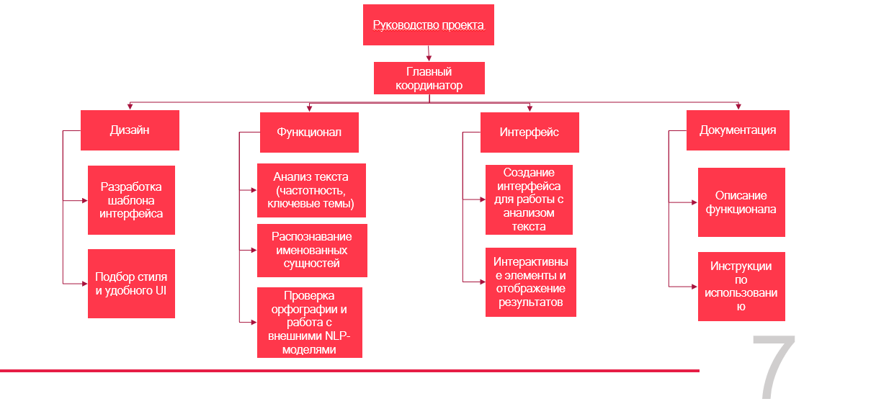

Актульность
-
Отсутствие понятных и бесплатных программ
для быстрого анализа и обработки текста
-
Оффлайн-решение
-
Открытый исходный код
Проблематика
Многие люди при работе с большим
объемом информации сталкиваются со
снижением продуктивности и риском
ошибок из-за ручного анализа, который
занимает много времени. Отсутствие
программного обеспечения для анализа
больших объемов текстовых данных создает
значительные трудности для пользователей.
Цели
Цель: Разработать и выпустить многоплатформенное
десктопное приложение с графическим интерфейсом для
NLP-анализа текстовых данных, основанное на существующем
Python/Spacy скрипте, и возможностью обработки текста
Задачи
- Определение необходимого функционала для целевой аудитории.
- Написание графического интерфейса.
- Оптимизация кода.
- Дополнение функционала.
- Тестирование и публикация бинарных файлов и исходного кода
Описание целевой аудитории
-
1. Основные сегменты ЦА
-
Студенты и исследователи:,
Потребности: Простой интерфейс для быстрого
анализа текстов, документация и примеры.
-
Журналисты и писатели:
Потребности: Простой интерфейс для анализа текста (эмоциональная окраска, частота слов).
-
Преподаватели и образовательные учреждения:
Потребности: Упрощённый функционал для обучения NLP.
-
Малые и средние бизнесы:
Потребности: Анализ ключевых слов, экспорт результатов.
-
2. Характеристики ЦА
-
Возраст: Основная аудитория — молодёжь
(18-35 лет), но также и специалисты среднего возраста.
-
Уровень знаний: Разные уровни —
от начинающих до опытных пользователей.
-
География: Приложение востребовано
как в развитых, так и в развивающихся
странах, особенно для работы в оффлайн-режиме.
-
3. Потребности ЦА
-
Простота и доступность:
Удобный интерфейс и работа без интернета.
-
Гибкость: Настройки анализа и
фильтры для различных задач.
-
Результативность: Быстрое и точное
выполнение анализа с возможностью экспорта данных.
Структура работы в проекте
